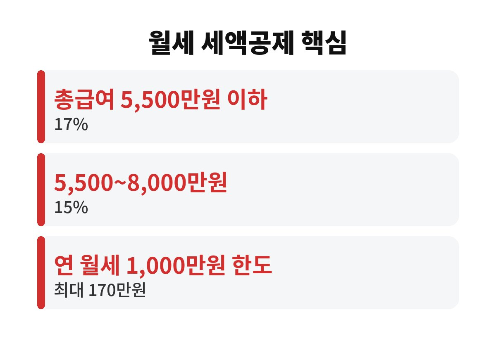

월세 세액공제는 연 월세 1,000만원 한도에서 최대 170만원까지 세금을 돌려받는 제도이다. 월세를 내면서도 연말정산에 넣지 않은 무주택 직장인이라면, 11월인 지금 무엇부터 챙겨야 할지 궁금할 것이다.
월세 세액공제는 소득공제가 아니라 세액공제라서 계산한 세금에서 금액이 그대로 빠진다. 공제율은 총급여 5,500만원 이하이면 월세의 17%, 5,500만원 초과 8,000만원 이하이면 15%이다. 대상 월세는 연 1,000만원까지만 인정된다.
예를 들어 총급여 5,000만원인 직장인이 월 70만원씩 1년간 840만원을 냈다면 840만원의 17%인 약 142만원이 세액에서 공제된다. 월세가 더 높아도 1,000만원이 넘는 부분은 계산에서 빠지기 때문에, 최대 환급액은 170만원이다. 월세가 부담스러운 만큼 이 제도를 챙기면 한 달 월세의 두 배 가까운 돈이 돌아올 수 있다.
기본 조건은 무주택 세대주이면서 총급여가 8,000만원 이하인 근로자이다. 세대주가 직접 공제를 받지 않는 경우에는 일정 요건에서 세대원도 가능하다. 집은 국민주택규모인 전용 85제곱미터 이하이거나 기준시가 4억원 이하여야 한다. 오피스텔이나 고시원처럼 주거용으로 쓰는 곳도 요건을 맞추면 대상이 된다.
집주인의 동의는 필요하지 않다. 세입자가 직접 신청하는 제도이기 때문에 집주인이 싫어할 것 같아서 포기하는 경우가 많은데, 월세 세액공제 자체는 집주인에게 통보되지 않는다. 다만 집주인이 현금영수증을 발급해 주는 경우와는 별개의 일이다.
첫째는 주소 문제이다. 임대차계약서의 주소와 주민등록등본상 주소가 같아야 하고, 계약 기간 동안 전입신고가 되어 있어야 한다. 이사하고 전입신고를 미뤘다면 그 기간은 인정되지 않을 수 있다.
둘째는 이체 증빙이다. 월세를 현금으로 건넸거나 가족 계좌로 보냈다면 증빙이 어려워진다. 집주인 명의 계좌로 이체한 내역을 통장 사본이나 이체 확인서로 남겨 두는 편이 안전하다. 매달 같은 날짜에 이체하는 습관이 증빙을 단순하게 만든다.
셋째는 시기이다. 회사 연말정산에서 빠뜨렸더라도 다음 해 5월 종합소득세 신고 기간이나 경정청구를 통해 최근 5년 안의 공제를 다시 신청할 수 있다. 지금 11월은 서류를 미리 모아 두기에 가장 좋은 때이다.

대부분의 회사는 12월에서 1월 사이에 연말정산 자료를 받는다. 임대차계약서 사본과 주민등록등본, 월세 이체 내역을 준비해서 회사 담당자에게 제출하면 된다. 회사마다 양식이 다르므로 담당 부서의 안내를 먼저 확인하는 것이 좋다.
월세 세액공제를 받으면 건강보험료 등 다른 부분에는 영향이 없는지 걱정하는 사람도 있다. 연말정산 환급은 이미 낸 세금을 돌려받는 절차이므로 일반적으로는 그런 걱정 없이 신청할 수 있다. 다만 세부 사항은 개인 상황에 따라 다를 수 있다.
올해 월세를 한 번도 연말정산에 넣어 본 적이 없다면 지금 계약서와 이체 내역부터 찾아보면 좋다. 혹시 지난해에도 월세를 냈다면 5년 안에 소급해서 돌려받을 가능성까지 열어 두면 좋다. 월세 세액공제를 놓친 경험이 있다면 댓글로 남겨 주기 바란다. 도움이 되었다면 구독해 주기 바라며, 다음 글도 생활 속 돈 이야기로 찾아온다.
※ 이 글은 일반 정보이며 투자 권유가 아닙니다. 공제 요건과 한도는 바뀔 수 있으니 국세청 안내를 최종 확인하세요.